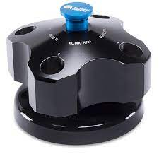
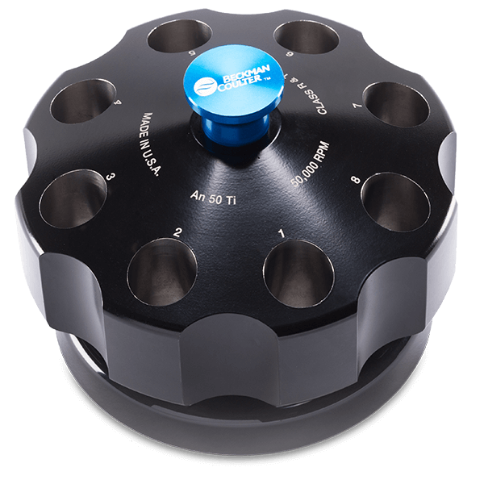

Analytical Ultracentrifuge Rotors
Rotor Types
The only rotors that can be used with the Optima AUC and the ProteomeLab XL-A/I are the An-60 Ti, and An-5- Ti rotors. The An-60 Ti and An-50 Ti rotors are manufactured in an NSAI-registerd ISO 9001 or 9002 facility for the use with the appropriately classified Beckman-Coulter analytical ultracentrifuges.
In both rotors, the cell holes are numbered for easy identification, and have a handle attached for easy lifting. Rotors should always be placed on their stands when not in the ultracentrifuge to prevent damage to the over-speed disk. Depending on the usage, rotors generally have a life span of 10 years.

An-60 Ti Rotor
Max speed: 60,000 rpm
RCF at r-max: 290,000 x g
R-max: 7.2 cm
R-average: 6.5 cm
Max Capacity: 3 analytical cells + 1 counterbalance
Weight (Fully Loaded): 12 lbs
The An-60 Ti analytical rotor is a four-place titanium rotor (painted black). All four holes are parallel to the axis of rotation.

An-50 Ti Rotor
Max Speed: 50,000 rpm
RCF at r-max: 201,600 x g
R-max: 7.2 cm
R-average: 6.5 cm
Max Capacity: 7 analytical cells + 1 counterbalance
Weight (Fully Loaded): 12 lbs
The An-50 Ti analytical rotor is an eight-place titanium rotor (painted black). All eight holes are parallel to the axis of rotation.
Rotor Safety
The forces generated in high-speed ultracentrifuges like the Optima AUC are enormous. For example, if 1 gram of a material was placed on the bottom of a rotor bucket rotating at 60,000 rpm, we would find it would exert the gravitational equivalent of 0.5 ton of centrifugal mass at the bottom of the bucket. We must also take into account that the structural failure characteristic that make metal rotors dangerous is their propensity to catastrophically fail. That is, having a significant mass removed from the main body while at speed.
The relative centrifugal field (RCF) is the ratio of the centrifugal acceleration of a specified radius and speed to the standard acceleration of gravity. It is represented by
where r is the radius (mm), w is the angular velocity (radians per second), and g is the standard acceleration of gravity (9807 mm/s2).
This is what that looks like:
-The separated piece is thrown into the side of the centrifuge at extremely high speeds.
-The centrifuge will immediately go into a violent state of imbalance. Hopefully, it will shut off before more damage occurs.
-The main body of the rotor may strike the side wall of the centrifuge.
-Less concerning, but the cells containing your sample will be broken, and liquid exposed.
This is illustrated here by PennEHRS.
Rotor safety while in the rotor chamber is linked to rotor balance. The mass of the rotor must be evenly distributed on the drive hub, allowing the rotor to turn smoothly. An improperly loaded rotor will be unbalanced and consistent running of unbalanced rotors will cause the drive life to diminish. To balance a rotor, fill all opposing tubes to the same level with liquid of the same density, and check the mass of each cell. Opposite cells must be within 0.5 g of each other.
Life, Maintenance, and Retirement
Proper Care and Handling of a AUC Rotor includes:
[✓] Recording of the purchase data, manufacturing data, and serial number.
[✓] Reading of the manuals before use, and following all operational specifications that the manufacture recommends.
[✓] Not exceeding the maximum speed and sample density ratings. Speed reductions are required for running high-density solutions.
[✓] Keeping a well-kept rotor log that includes date, user, rotor used, and any problems encountered.
[✓] Storing the rotors in a dry environment, not in the centrifuge.
[✓] Regular cleaning/decontamination/sterilization: The rotor body can be auto-claved at 121-degrees Celsius for up to an hour, if necessary. The rotor can be cleaned periodically with mild soap and water.
[✓] Frequent Inspections: Periodically inspect the rotor, particularly inside cavities, while looking for any rough spots, cracks, pitting, or heavy discoloration. If any of these are evident, do not use that rotor. Inspect the over-speed disk. If scratched, damaged, or missing, do not use rotor until it is replaced.
[✓] Corrosion prevention.
Over-speed Disk Replacement
-
Pry up the edges of the old disk with a scalpel, taking care not to scratch the rotor, then peel the disk off.
-
Clean the area around the drive hole with acetone to remove any old adhesive.
-
Peel the paper backing off the new disk (do not touch the adhesive) and fit it around the hole (a centering tool may be used).
-
Allow the disk to set for a minimum of 2 hours.